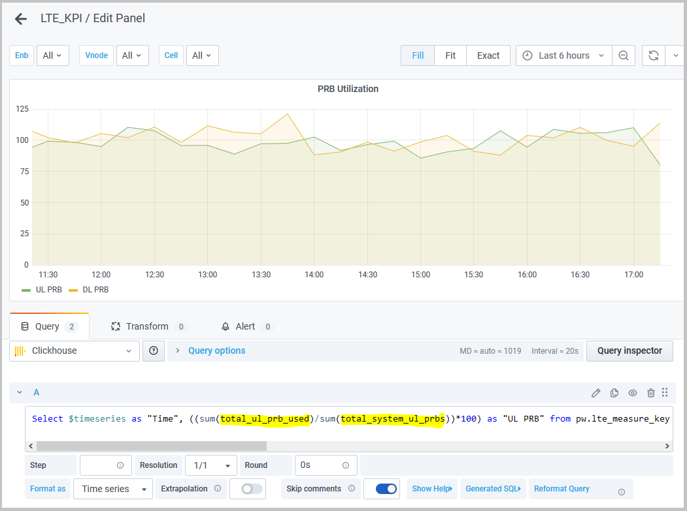

Counter Management
The PW EMS Monitoring and Reporting function manages counters it receives in a large form file from the vBBU through the Secure File Transfer Protocol (SFTP) micro-service.
Counters are used by the application software, SON components, and access nodes such as the HNG, vBBU, vNodes and 2G and 4G cells. The SON statistics micro-service (SMS) handles statistics management for vBBU LTE and 2G resource files, and the SON interval configuration controls how often statistics are collected from access network components. SON also raises the appropriate alarms and events at different levels. For example:
- The SON sends appropriate events if the internal stats database management function must remove counter data before successful consumption by the PW EMS.
- The SON raises and clears an alarm if the communication link between the internal statistics database management function and the PW EMS fails for sending statistics.
Refer to the Alarms and Events Reference Guide for more information on the list of alarms and events.
Counters can be used in the PW EMS Monitoring and Reporting KPI dashboards. For example, the total_ul_prb_used and total_system_ul_prbs counters (both highlighted in yellow) are used in a query for the default LTE_KPI (Dashboards > Manage > LTE_KPI):

Refer to the Virtual Baseband Unit RAN Counters and KPI Guide for detailed information about counters and statistics.